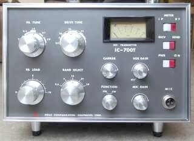 |
まずはフロント／お顔から
コンパクトかつシンプルです（電源外付け）
３．５ＭＨｚ帯から２９ＭＨｚ帯まで、ＨＦ５バンドをカバー
ＶＦＯは、相方の受信機ＩＣ-７００Ｒに依存します
デザインは、もちろん相方とマッチ！です
モードは、ＳＳＢ、ＣＷ
逆サイド・バンドは、受信機同様対応できません
ＳＳＢ時にも、キャリア注入が出来るようになっていますのでＡ３Ｈにも対応ＯＫと言うことになります |
|
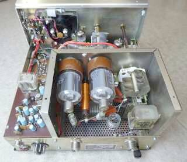 |
こちらは、リアから
メーター照明ランプは、白熱球からＬＥＤランプに交換しています
１２Ｖ定電圧化のためにも、消費電力は極力減らすことを考えます
懐かしさで言えば、黄色っぽい電球色が良いのかも知れませんが・・・
ファイナル管は、ご覧のように横置きです
・電源接続はＵＳプラグ
・リモートケーブルは、ＭＴ７Ｐソケット
・アンテナあるいは受信機接続はＭ型
・ＶＦＯ接続は、ＲＣＡ
・ＣＷキーは、イヤホンジャック
・アース端子は陸式ターミナル
何となく時代を想像させるパーツが使ってあります |
|
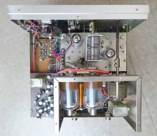 |
特徴的なのはレイアウト
ご覧のように、３／４は真空管スペースです
ＭＴ管２本は、１２ＢＹ７Ａ ミキサとドライブです
ファイナル管 Ｓ２００１ は横置き
自然対流で冷却ということでは当を得ていると思います
入力側はオープン、出力側がシールドケースの中という構造です（ファイナル部のシールドケースは取り外して写しています））
各同調ＶＣのシャフトは、ベークライト棒が使用してあります
リレーが２つ見えていますが、いずれも大型！ ＶＯＸ動作には不向きですが、丈夫ではありそうです
|
|
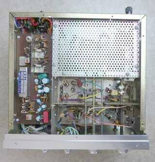 |
こちらがボトムを撮したもの
真空管スペースの大きさが見て取れます
メカフィル風に見えているのが、９MHZクリスタルフィルタです
長細い基板は、
AF－平衡変調－フィルタ－IFアンプ
｜
キャリア発振
ここまでを乗せた、いわゆるジェネレータ部です |
|
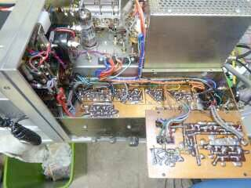 |
開いている（裏返しに写っている）のはＶＯＸ基板です
こうすることで、通電したまま動作のチェックが可能ですね
VOX基板には、９Vの定電圧回路も乗っています
今回、基幹の１２Ｖも定電圧化しましたので、ここは二重に安定化ということになります |
|
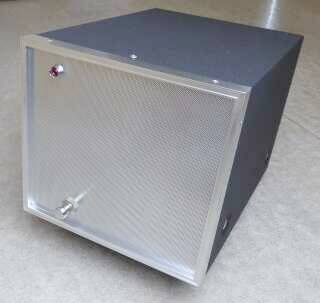 |
ＡＣ電源 ＩＣ-７００ＰＳ です
スピーカーが内蔵されています
中身の様子は、下段でご紹介
フロントパネルにある電源ＳＷは、本体のＳＷに関係無く活きています（なかなか面白い！ＳＷは並列接続です）
ＰＳ本体フロントパネルと７００Ｔフロントパネルのスイッチが並列接続になります（どちらからでもＯＮ可能）
内蔵スピーカーですが、意外と高音圧です
Ｔｒアンプで出力が大きくない点を考慮したものかと想像されます
そのＡＦアンプ共々、中音域が強調された堅い音がします！ |
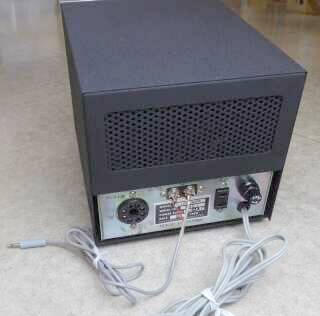 |
ＩＣ-７００ＰＳ のリアです
電源接続は、８Ｐ ＵＳソケットが使用されています
ＩＣ-７００Ｒ用にでしょう、ＡＣアウトレットがひとつ用意されています
あとは、スピーカー接続用の端子です |
|
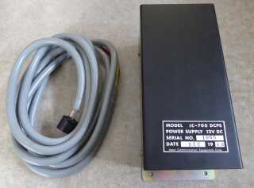 |
ＤＣ電源 ＩＣ-７００ＤＣＰＳ
当時、こんな用意があったのです
リアル・タイムで発売を知っている世代なのですが、このものの存在は全く知りませんでした
ケーブルは、出力側 IC-７００Ｔに接続するためのものです
ＤＣ１２Ｖ移動運用ＯＫです
さすがに車載運用はないでしょう・・・ＵＳならあり得そうですが！？ |
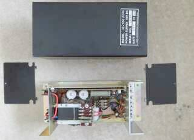 |
ケースを開けるとこのようになっています
両サイドパネルを外した中に、入出力のケーブルを接続する端子が用意されています |
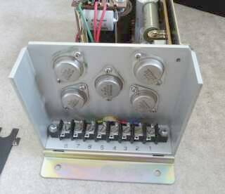 |
パワートランジスタ・・・今となっては懐かしいＰＮＰタイプ、２ＳＢタイプの採用です
こちらが、電源出力側です |
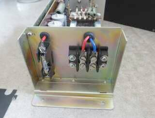 |
こちらがＤＣ１２Ｖ入力側です
このＤＣ電源 多分全く未使用と思われます
ケーブルの端子に、締め付けた後が残っていません
シリアル・ラベルには、６８年１２月とスタンプが押してあります |
|